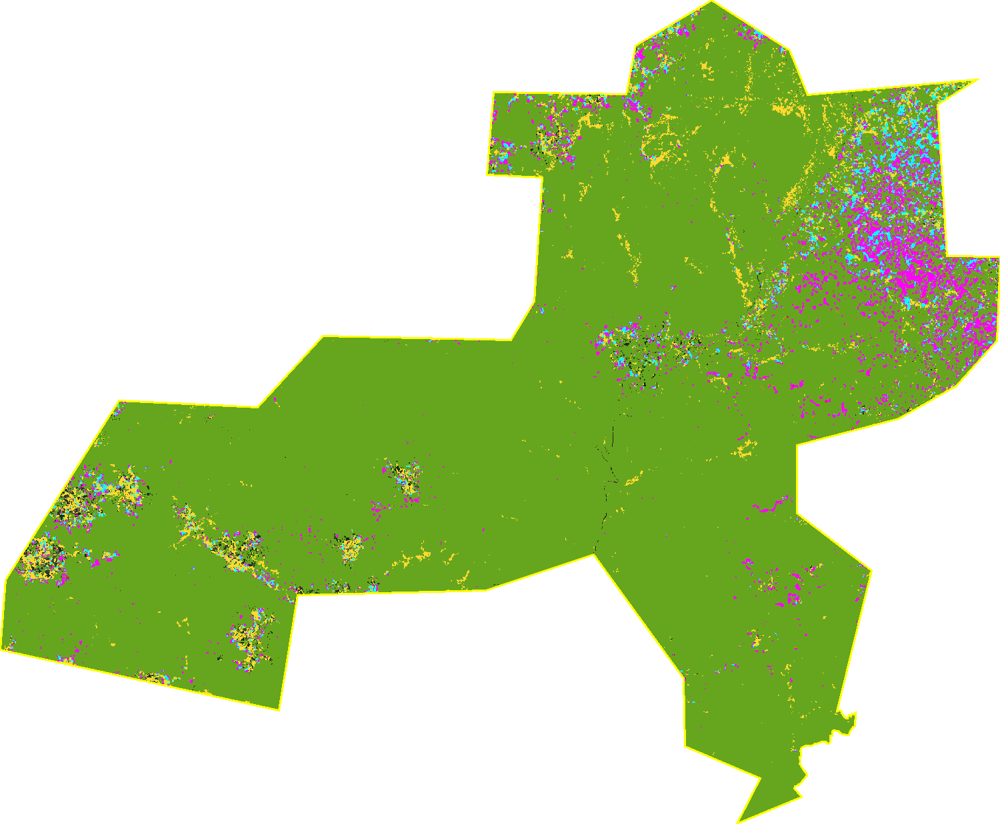
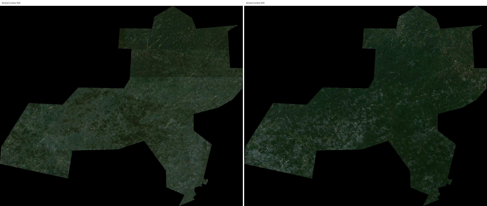

Liberia FMC Area K wood-source screening AOI
AOI: liberia_fmc_area_k_contract_boundary | generated 2026-08-12T14:53:44Z
Forest Management Contract Area K concession boundary for EUDR wood-source forest baseline, post-2020 disturbance, and source-context screening.
Interactive Evidence Map
Open map.html. The map uses local PNG overlays generated from Earth Engine through this Python/geemap pipeline. Basemap tiles are live Leaflet layers; analytical overlays are saved under layers/.
Static Evidence Composite
The composite overlays forest baseline, remaining forest, Hansen loss, TMF deforestation, TMF degradation, optional FDP tree-crop probability context, and the concession-level source context on Sentinel-2 visual context.

Before / After Visual Context
Sentinel-2 panels are context only. They help human review, but the numerical screening metrics come from the named raster observers.

Evidence Logic
Forest baseline is JRC GFC2020 forest at the EUDR cutoff. Forest coverage by end-2025 is baseline forest minus Hansen first-loss pixels dated 2021-2025. Wood source context is the concession polygon. It is deliberately marked unresolved for plot-level sourcing because no Annual Operational Plan block, harvesting block, tree-origin, log-origin, chain-of-custody or shipment-specific geometry is supplied.
Fused commodity/source context combines two different context types for display: concession-level wood context and optional FDP tree-crop candidates. This fusion is a map product, not a claim that timber came from a tree-crop pixel, nor a compliance finding.
Screening Interpretation Fields
| wood_concession_context | The AOI is source/concession context only. It is not harvesting-block, tree-origin, log-origin or shipment-specific proof. |
|---|---|
| hansen_loss_inside_wood_concession_context_ha | Post-2020 Hansen stand-replacement disturbance on JRC 2020 forest inside the concession. |
| tmf_degradation_ha | JRC TMF degradation is a separate wood-path observer and is not collapsed into deforestation hectares. |
| fdp_tree_crop_candidate | Optional non-wood tree-crop probability context from FDP. It is not timber-source evidence and does not resolve wood legality or source linkage. |
Numerical Results
| aoi_geodesic_area_ha | 267497.6889 |
|---|---|
| fdp_any_tree_crop_2024_ha | 14508.9626 |
| fdp_cocoa_image_count | 4 |
| fdp_coffee_image_count | 4 |
| fdp_palm_image_count | 4 |
| fdp_rubber_image_count | 4 |
| hansen_loss_2021_2025_on_jrc_forest_ha | 10876.0295 |
| hansen_loss_inside_wood_concession_context_ha | 10876.0295 |
| hansen_loss_on_fdp_tree_crop_candidate_ha | 3700.1639 |
| hansen_lossyear_max_in_50km_buffer | 25 |
| hansen_lossyear_max_in_aoi | 25 |
| jrc_forest_2020_ha | 260465.7432 |
| jrc_forest_remaining_end_2025_ha | 249612.8908 |
| s2_2020_least_cloudy_scene_cloud_pct | 0 |
| s2_2020_least_cloudy_scene_date | 2020-02-15 |
| s2_2020_mean_valid_obs_per_pixel | 13.2598 |
| s2_2020_min_valid_obs_per_pixel | 5 |
| s2_2020_scene_count | 55 |
| s2_2025_least_cloudy_scene_cloud_pct | 0.0366 |
| s2_2025_least_cloudy_scene_date | 2025-01-04 |
| s2_2025_mean_valid_obs_per_pixel | 9.3911 |
| s2_2025_min_valid_obs_per_pixel | 1 |
| s2_2025_scene_count | 53 |
| tmf_deforestation_2021_2025_ha | 5416.4285 |
| tmf_degradation_2021_2025_ha | 7135.5278 |
| wood_concession_context_area_ha | 266341.8423 |
| aoi_id | liberia_fmc_area_k_contract_boundary |
| commodity | wood |
| production_geometry_role | concession |
| production_plot_status | unresolved |
| generated_utc | 2026-08-12T14:53:44Z |
| pipeline_script | /Users/server/projects/eudr-dmi-gil/scripts/run_liberia_wood_geemap_pipeline.py |
| pipeline_script_sha256 | 2292b65282b5536102948619a07f3fdabbaabcc259add1c3a189c7644de4b4d9 |
| pipeline_config | /Users/server/projects/eudr-dmi-gil/data_db/liberia_wood_geemap_pipeline_config.json |
| pipeline_config_sha256 | 9f4535a4609b05c7eca778d3bdae088a31aaa5335859ec8cedbafe88fe661e7b |
| asset_catalogue | /Users/server/projects/eudr-dmi-gil/data_db/liberia_wood_geemap_pipeline_assets.csv |
| asset_catalogue_sha256 | e14d4bc1d57971a7079ec18adb1996e1fbb711502ae1a25172c79e65262a0bca |
| source_geojson | /Users/server/projects/eudr-dmi-gil/aoi_json_examples/liberia_fmc_area_k_contract_boundary.geojson |
| source_geojson_sha256 | db386f478d9b461418155cb5db4ed9bd70d26d0b554786d61e76aad6280a210b |
| asset_id_fdp_cocoa | projects/forestdatapartnership/assets/cocoa/model_2025b |
| asset_id_fdp_coffee | projects/forestdatapartnership/assets/coffee/model_2025b |
| asset_id_fdp_palm | projects/forestdatapartnership/assets/palm/model_2025b |
| asset_id_fdp_rubber | projects/forestdatapartnership/assets/rubber/model_2025b |
| asset_id_hansen_gfc | UMD/hansen/global_forest_change_2025_v1_13 |
| asset_id_jrc_forest_types | JRC/GFC2020_subtypes/V1 |
| asset_id_jrc_gfc2020 | JRC/GFC2020/V3 |
| asset_id_sentinel2 | COPERNICUS/S2_SR_HARMONIZED |
| asset_id_tmf_deforestation_year | projects/JRC/TMF/v1_2025/DeforestationYear |
| asset_id_tmf_degradation_year | projects/JRC/TMF/v1_2025/DegradationYear |
Glossary Of Terms And Abbreviations
| AOI | Area of Interest: the polygon being screened. |
|---|---|
| FMC | Forest Management Contract: Liberia's concession contract area category used here as the source/context boundary. |
| EUDR | European Union Deforestation Regulation, Regulation (EU) 2023/1115. |
| GEE | Google Earth Engine: cloud geospatial analysis platform that hosts the source rasters used here. |
| geemap | Python package that wraps Earth Engine and mapping workflows; this script uses ee/geemap-style Python rather than Code Editor JavaScript. |
| JRC | Joint Research Centre of the European Commission, provider of GFC2020, GFC2020_subtypes and TMF products. |
| GFC2020 | JRC Global Forest Cover 2020; Map == 1 is treated as forest baseline evidence at the EUDR cutoff. |
| GFT / forest types | JRC Global Forest Types 2020; class 1 = naturally regenerating, 10 = primary, 20 = planted/plantation forest. |
| Hansen GFC | UMD/Hansen Global Forest Change; lossyear 21..25 means first detected gross forest-cover loss in 2021..2025. |
| TMF | JRC Tropical Moist Forest product family; this script uses DeforestationYear and DegradationYear observers. |
| Deforestation | In this script, a mapped forest-loss/deforestation observer. It is screening evidence, not a legal conclusion by itself. |
| Degradation | A separate wood-path disturbance stream, often canopy disturbance without full stand replacement. It is not merged into deforestation hectares. |
| FDP | Forest Data Partnership; optional 10 m probability models for cocoa, coffee, oil palm and rubber. |
| Probability threshold | The minimum FDP probability for admitting a pixel as a candidate tree-crop pixel; configured here as 0.25. |
| Fused commodity/source context | Categorical display layer: concession context plus optional FDP tree-crop candidate context. It is not shipment/source proof. |
| Production geometry role | The meaning of the supplied geometry. Here it is only a concession, not a harvesting block, tree/log origin, or shipment plot. |
| Production plot status | Whether plot/source geometry is resolved. Here it remains unresolved because harvesting-block/log-origin geometry is missing. |
| Source linkage | Evidence tying a shipment or product to a specific harvesting block, tree, log origin, permit or chain-of-custody record. |
| Sentinel-2 SR | Copernicus Sentinel-2 Level-2A surface reflectance imagery used for optional visual context. |
| ha | Hectare, 10,000 square meters. |
| lossyear | Hansen band encoding 0 for no loss, or 1..25 for first detected loss in 2001..2025. |
Source And Reproducibility
Pipeline script: /Users/server/projects/eudr-dmi-gil/scripts/run_liberia_wood_geemap_pipeline.py (sha256 2292b65282b5536102948619a07f3fdabbaabcc259add1c3a189c7644de4b4d9)
Pipeline config: /Users/server/projects/eudr-dmi-gil/data_db/liberia_wood_geemap_pipeline_config.json (sha256 9f4535a4609b05c7eca778d3bdae088a31aaa5335859ec8cedbafe88fe661e7b)
Dataset asset catalogue: /Users/server/projects/eudr-dmi-gil/data_db/liberia_wood_geemap_pipeline_assets.csv (sha256 e14d4bc1d57971a7079ec18adb1996e1fbb711502ae1a25172c79e65262a0bca)
AOI GeoJSON: /Users/server/projects/eudr-dmi-gil/aoi_json_examples/liberia_fmc_area_k_contract_boundary.geojson (sha256 db386f478d9b461418155cb5db4ed9bd70d26d0b554786d61e76aad6280a210b)
Machine-readable outputs: metrics.json, metrics.csv.